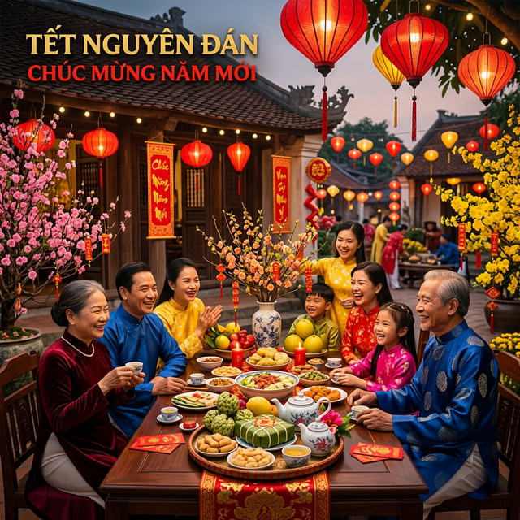
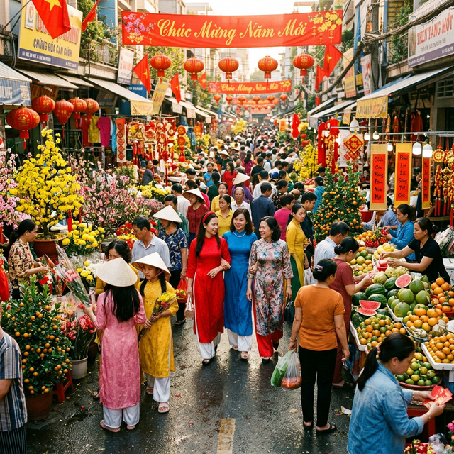
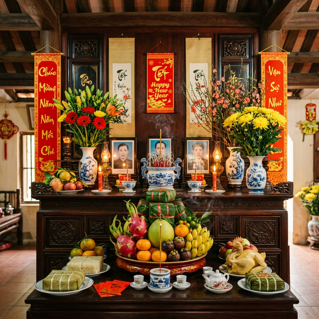
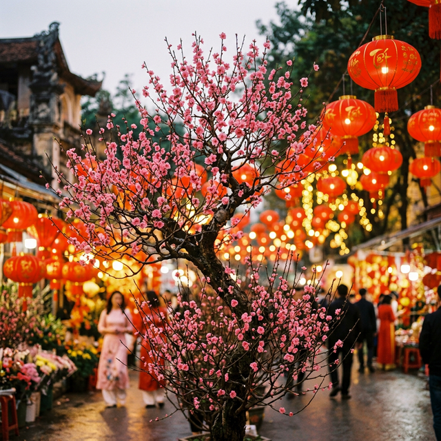
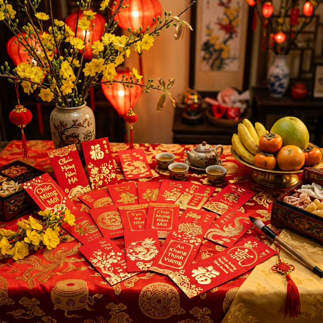
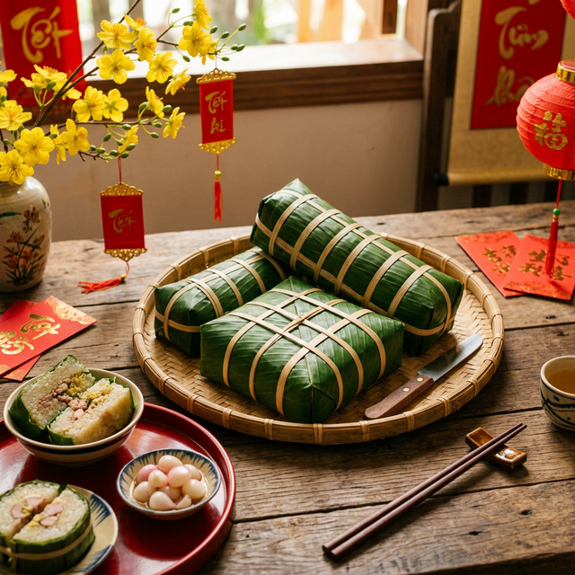
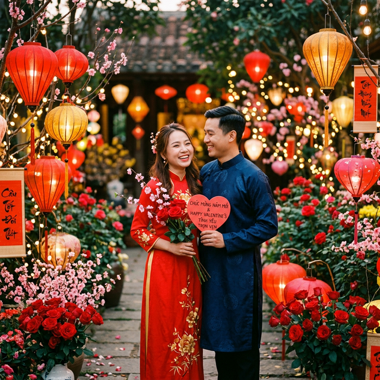

Xuân về - Tình yêu nở hoa
Khi mùa xuân gặp ngày lễ tình nhân — sự giao thoa tuyệt đẹp giữa truyền thống Á Đông và tình yêu phương Tây
Khám Phá Ngay ↓Lễ hội truyền thống lớn nhất và quan trọng nhất trong văn hóa Việt Nam
Tết Nguyên Đán (hay còn gọi là Tết Cả, Tết Ta, Tết Âm lịch, Tết Cổ truyền) là dịp lễ đầu năm âm lịch, đánh dấu sự khởi đầu của một năm mới theo lịch Mặt Trăng. Đây là lễ hội quan trọng nhất trong văn hóa Việt Nam và nhiều nước Đông Á.
Từ "Tết" bắt nguồn từ chữ Hán "節" (Tiết), nghĩa là thời khắc giao thoa giữa năm cũ và năm mới. "Nguyên" có nghĩa là khởi đầu, "Đán" nghĩa là buổi sáng sớm — Tết Nguyên Đán chính là buổi sáng đầu tiên của năm mới.
Tết thường rơi vào khoảng cuối tháng 1 đến giữa tháng 2 dương lịch, kéo dài từ ngày 23 tháng Chạp đến hết mùng 7 tháng Giêng. Đây là dịp để mọi người sum họp gia đình, tưởng nhớ tổ tiên, và cầu mong một năm mới an lành, thịnh vượng.

Hành trình hàng nghìn năm của Tết cổ truyền Việt Nam
Tết Nguyên Đán đã có từ thời Hùng Vương dựng nước. Sự tích "Bánh chưng, bánh dày" gắn liền với hoàng tử Lang Liêu, con vua Hùng thứ 6, đã sáng tạo ra hai loại bánh tượng trưng cho Trời (bánh dày tròn) và Đất (bánh chưng vuông) để dâng lên vua cha trong dịp Tết.
Dù bị đô hộ hơn 1000 năm, người Việt vẫn giữ gìn phong tục đón Tết riêng. Tết trở thành biểu tượng của tinh thần dân tộc, sự bất khuất và khát vọng tự do. Nhiều phong tục Tết được ghi chép trong các tài liệu cổ thời kỳ này.
Qua các triều đại Ngô, Đinh, Tiền Lê, Lý, Trần, Hậu Lê, Nguyễn — Tết ngày càng phong phú với nhiều nghi lễ, tập tục được hoàn thiện. Triều đình tổ chức lễ Tết long trọng, ban bố ân xá, và nhân dân khắp nơi hân hoan đón xuân.
Một mốc lịch sử đặc biệt khi cuộc Tổng tiến công và nổi dậy Tết Mậu Thân diễn ra đúng đêm Giao thừa, đánh dấu bước ngoặt quan trọng trong cuộc kháng chiến chống Mỹ của dân tộc Việt Nam.
Ngày 4/12/2024, tại kỳ họp lần thứ 19, UNESCO đã chính thức ghi danh Tết Nguyên Đán vào danh sách Di sản văn hóa phi vật thể đại diện của nhân loại, khẳng định giá trị văn hóa to lớn của lễ hội này trên trường quốc tế.
Những phong tục truyền thống thiêng liêng, tạo nên bản sắc Tết Việt

Cúng ông Táo (23 tháng Chạp): Gia đình làm lễ tiễn Táo Quân về trời báo cáo Ngọc Hoàng những việc xảy ra trong năm. Lễ vật gồm cá chép vàng (phương tiện để Táo Quân cưỡi về trời), mâm cỗ, và bộ quần áo giấy.
Chợ Tết: Không khí nhộn nhịp nhất trong năm. Người dân đổ xô đi mua sắm hoa, cây cảnh, thực phẩm, và quà biếu. Các chợ hoa truyền thống như Hàng Lược (Hà Nội), Bến Bình Đông (TP.HCM) rực rỡ sắc hoa.
Tất niên (29-30 tháng Chạp): Bữa cơm tất niên là bữa cơm cuối cùng của năm cũ, cả gia đình quây quần bên nhau, tưởng nhớ tổ tiên và chia sẻ những kỷ niệm trong năm qua.
Giao thừa là thời khắc chuyển giao giữa năm cũ và năm mới, đúng 0h đêm 30 tháng Chạp. Đây được coi là giờ phút linh thiêng nhất trong năm.
Lễ cúng Giao thừa: Gia đình bày mâm lễ ngoài trời (lễ Trừ Tịch) để tiễn vị thần cũ và đón vị thần mới cai quản năm mới. Theo tín ngưỡng dân gian, mỗi năm có một vị Hành khiển và Phán quan khác nhau.
Pháo hoa: Các thành phố lớn tổ chức bắn pháo hoa rực rỡ chào đón năm mới, thu hút hàng triệu người xem. Trước đây, người Việt đốt pháo nổ, nhưng từ năm 1995 đã chuyển sang bắn pháo hoa.
Ngày quan trọng nhất, dành để thờ cúng tổ tiên và chúc Tết ông bà, cha mẹ bên nội. Xông đất — người đầu tiên bước vào nhà năm mới mang ý nghĩa quyết định vận may cả năm. Xuất hành — chọn hướng và giờ tốt để ra khỏi nhà lần đầu.
Ngày dành để về thăm bên ngoại, chúc Tết ông bà, cha mẹ bên vợ. Đây cũng là ngày nhiều gia đình đi thăm họ hàng, bạn bè, đồng nghiệp để gửi lời chúc tốt đẹp và trao lì xì may mắn.
Ngày dành để tri ân thầy cô giáo — "Mùng 1 Tết cha, mùng 2 Tết mẹ, mùng 3 Tết thầy". Học trò đến thăm và chúc Tết thầy cô, thể hiện truyền thống "tôn sư trọng đạo" cao đẹp của người Việt.
Người lớn tặng lì xì (bao lì xì đỏ chứa tiền) cho trẻ em và người cao tuổi kèm lời chúc phúc. Lì xì tượng trưng cho may mắn, tài lộc, không nặng về giá trị vật chất mà ở ý nghĩa tinh thần.
Suốt 3 ngày Tết, gia đình thắp hương, bày mâm cỗ trên bàn thờ để mời ông bà tổ tiên về ăn Tết cùng con cháu. Mâm ngũ quả được bày trang trọng với ý nghĩa "cầu - sung - vừa - đủ - xài".
Mọi người gửi nhau lời chúc tốt đẹp: sức khỏe, phát tài, an khang thịnh vượng, vạn sự như ý. Những câu chúc phổ biến: "Năm mới phát tài", "An khang thịnh vượng", "Sức khỏe dồi dào".
Nét đẹp tâm linh quan trọng nhất trong ngày Tết

Bàn thờ tổ tiên là nơi trang trọng nhất trong mỗi gia đình Việt dịp Tết. Bàn thờ được trang hoàng lộng lẫy với hoa tươi, nến, hương, và mâm ngũ quả — biểu tượng của ngũ hành (Kim, Mộc, Thủy, Hỏa, Thổ).
Miền Bắc: Mâm ngũ quả gồm chuối, bưởi, đào, hồng, quýt — tượng trưng cho sự no đủ, phúc lộc.
Miền Nam: Mâm ngũ quả gồm mãng cầu, dừa, đu đủ, xoài, sung — đọc chệch thành "Cầu - Vừa - Đủ - Xài - Sung" với ước nguyện cuộc sống đầy đủ.
Hương trầm tỏa ngát, tượng trưng cho sự kết nối giữa thế giới người sống và người đã khuất. Con cháu thắp hương khấn vái, mời tổ tiên về ăn Tết cùng gia đình.
Sắc xuân rực rỡ với hoa, cây cảnh và câu đối
Hoa Đào (miền Bắc): Cành đào hồng thắm là biểu tượng không thể thiếu của Tết miền Bắc. Theo truyền thuyết, cây đào có khả năng trừ tà, xua đuổi ma quỷ. Màu hồng đào tượng trưng cho sự may mắn, hạnh phúc và sinh sôi.
Hoa Mai (miền Nam & Trung): Hoa mai vàng rực rỡ mang ý nghĩa phú quý, vinh hoa. Người miền Nam tin rằng nếu hoa mai nở đúng đêm Giao thừa thì cả năm sẽ gặp nhiều may mắn. Mai càng nhiều cánh (đặc biệt mai 5 cánh) càng quý.
Cây Nêu: Truyền thống dựng cây nêu trước nhà vào ngày 23 tháng Chạp, treo khánh đất, chuông gió để xua đuổi tà ma. Đến mùng 7 tháng Giêng mới hạ nêu.
Câu đối đỏ: Viết trên giấy đỏ bằng mực Tàu, treo hai bên cửa nhà với lời chúc phúc, thể hiện tài văn chương và ước vọng năm mới.


Hương vị Tết qua những món ăn truyền thống đặc sắc

Bánh chưng (miền Bắc): Hình vuông, tượng trưng cho Đất. Gồm gạo nếp, thịt lợn, đậu xanh, gói trong lá dong, luộc 10-12 tiếng. Gắn liền với truyền thuyết Lang Liêu thời Hùng Vương.
Bánh tét (miền Nam): Hình trụ tròn, cùng nguyên liệu nhưng gói trong lá chuối. Một số biến thể đặc biệt: bánh tét nhân chuối, bánh tét lá cẩm.
Cảnh cả gia đình quây quần bên nồi bánh chưng đêm 30 Tết, kể chuyện, canh lửa — là hình ảnh đẹp đẽ nhất, ấm áp nhất của Tết Việt.
Thịt lợn nấu đông, ăn kèm dưa hành, vị béo ngậy hòa cùng chua nhẹ
Thịt kho nước dừa với trứng vịt, vị ngọt béo đậm đà đặc trưng miền Nam
"Thịt mỡ, dưa hành, câu đối đỏ" — bộ ba không thể thiếu ngày Tết miền Bắc
Mứt dừa, mứt gừng, mứt sen, hạt dưa... bày trên khay mứt đón khách
Canh khổ qua nhồi thịt — "khổ qua" nghĩa là cái khổ qua đi, đón điều tốt lành
Giò lụa, giò thủ, chả quế — những món giò chả truyền thống không thể thiếu
Xôi gấc đỏ tượng trưng may mắn, thường dùng cúng và ăn sáng mùng 1
Trà ướp hoa sen hoặc hoa nhài, thưởng thức cùng mứt Tết trong tiết xuân
Sự giao thoa tuyệt đẹp giữa truyền thống và tình yêu
Trong những năm Tết Nguyên Đán rơi vào khoảng giữa tháng 2, ngày Valentine 14/2 thường trùng với những ngày Tết. Đây là sự trùng hợp thú vị khi tình yêu đôi lứa hòa quyện cùng tình yêu gia đình.
Nhiều đôi trẻ tận dụng dịp này để cùng nhau:
"Xuân về, hoa nở, tình yêu đơm hoa — Valentine và Tết, một mùa hạnh phúc trọn vẹn."

Mỗi vùng miền mang một nét Tết riêng biệt, đặc sắc
Hoa: Hoa đào hồng thắm
Bánh: Bánh chưng vuông
Đặc trưng: Thịt đông, giò chả, dưa hành, canh măng miến. Không khí se lạnh, mưa
phùn. Phố cổ Hà Nội rộn ràng chợ hoa Hàng Lược.
Câu nói: "Thịt mỡ, dưa hành, câu đối đỏ / Cây nêu, tràng pháo, bánh chưng xanh"
Hoa: Hoa mai vàng
Bánh: Bánh tét, bánh tổ
Đặc trưng: Mâm cỗ Tết Huế cầu kỳ, tỉ mỉ với hàng chục món. Tré, nem chua, chả,
tôm chua. Tết ở Huế mang đậm chất cung đình, trang nhã.
Phong tục: Đi chùa Thiên Mụ đầu năm
Hoa: Hoa mai vàng rực
Bánh: Bánh tét lá cẩm
Đặc trưng: Thịt kho nước dừa, canh khổ qua, củ kiệu, lạp xưởng. Thời tiết ấm
áp, nắng vàng. Chợ hoa Nguyễn Huệ rực rỡ.
Tinh thần: Cởi mở, phóng khoáng, vui tươi
Những điều nên và không nên làm trong dịp Tết cổ truyền
Cộng đồng người Việt trên toàn thế giới vẫn giữ gìn Tết cổ truyền
Cộng đồng Việt kiều tổ chức Hội Tết lớn tại Little Saigon (California), Houston (Texas) với múa lân, hội chợ, trình diễn áo dài, và các gian hàng ẩm thực Việt Nam.
Lễ hội Tết tại Cabramatta (Sydney), Footscray (Melbourne) thu hút hàng chục nghìn người, cả người Việt lẫn người Úc bản địa cùng tham gia.
Tại Pháp, Đức, CH Séc, Ba Lan — cộng đồng người Việt tổ chức gói bánh chưng, văn nghệ, và giao lưu văn hóa với bạn bè quốc tế dịp Tết.